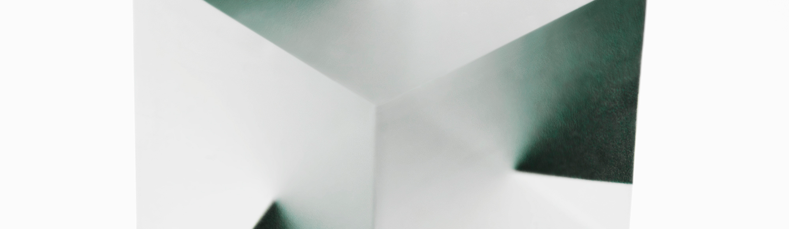

감각의 각성, 다시 바라보기
기슬기

기슬기
운전자에겐 낯선 길보다 친숙한 길이 더 위험할 수 있다고 한다. 익숙한 길에서는 집중하지 않은 채 의식이 없는 상태로 운전할 가능성이 그렇지 않을 때보다 더 높기 때문이다. 이 현상의 원인은 '과잉 학습 행동(overlearned activity)'이라고 할 수 있는데, 이는 어떤 기술을 익히고 난 뒤에 습관적으로 기술을 행하는 걸 의미한다. 기슬기는 사람이 오감으로 무언가를 인지하는 과정 또한 이처럼 습관화될 수 있다고 보았다. 작가는 안갯속에서 자신의 감각을 차단하여 오감을 의심하고, 관객의 상상과 호기심을 유발하여 감각을 재구성하게 한다. 이러한 각성으로 관객은 자신의 습관화된 감각을 정비하여 대상을 다시 바라보게 된다. 때로 작가는 새로운 공간으로 관객을 안내하기도 하면서 상상과 인지의 범위를 넓힌다.
Post Tenebras Lux
기슬기는 세상 속에 존재하는 차원에 관한 문제를 사진과 퍼포먼스, 오브제 제작 등의 다양한 방식을 결합하면서 압축적이고 은유적으로 표현한다. 여기서 작가가 생각하는 차원은 평면과 입체 등 물리적인 차원에서 시작하여, 작가의 주관에 의해 포착한 특정한 대상이 존재하는 시공간의 문제 전반을 아우른다. 이를 위해 작가는 [응시(Stare)]>연작이나 [조작된 풍경(Imputed Scenery)]연작에서처럼 서로 연관성이 없는 대상을 하나의 화면에 위치시켜 각각의 대상이 존재하는 차원의 문제를 사물을 바라보는 시선의 문제로 풀어내거나, [포스트 테네브라 룩스 (Post tenebras lux)]연작처럼 야생의 숲이 자리한 시공간을 가르며 나타난 초자연적인 형상을 병치시킴으로써 서로 다른 차원 간의 공존과 균열을 이야기하기도 한다. 차원의 만남과 충돌로 인해 발생하는 이미지의 문제는 그의 [크리스탈 레이크(Crystal Lake)]연작을 통해 보다 추상적인 형태로 나타나는데, 예를 들어 여섯 개의 채색된 평면이 반투명한 큐빅의 형태로 합쳐지면 빛의 반사에 의해 예기치 않은 또 다른 형상이 육면체 안에서 자연스럽게 모습을 드러낸다. 서로 다른 차원의 만남과 충돌, 공존과 균열로 모습을 드러낸 제 3의 형체는 분명 눈으로 확인할 수 있으나 만질 수 없으며, 고정되지 않는 실체로 존재한다. 우리는 그것을 감각 너머의 차원에서 직감적으로 어렴풋이 짐작할 수 있을 뿐이다. 이렇게 기슬기는 다양한 층위의 시공간이 공존하고 예기치 않은 비가시적 현상들이 가득한 세상의 모습을 차원의 문제에 빗대어 이야기한다. 그리고 그의 이러한 시도는 현실에 분명히 자리하고 있는 크고 작은 사건들, 그리고 그것이 실존하는 시공간의 문제, 그것의 본질에 대해 보다 넓게 사유할 수 있도록 우리를 이끈다.